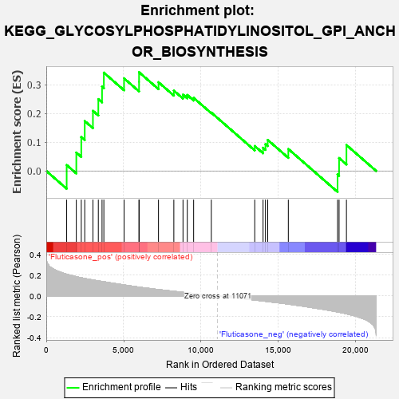
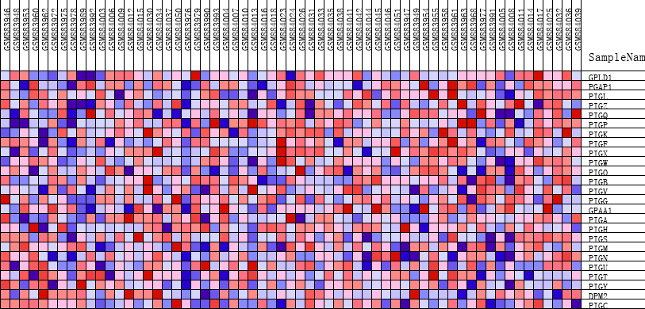
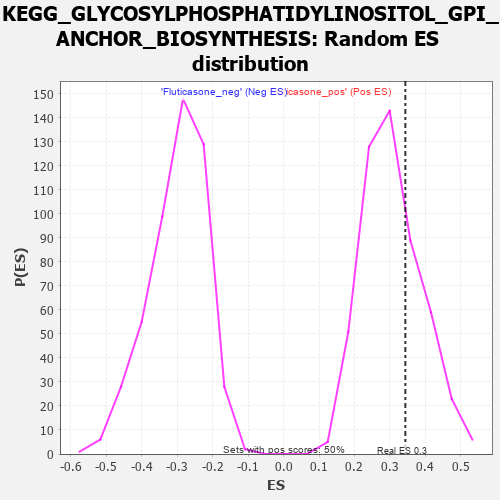

| | | Dataset | GSEA_expr_Flu.GSEA_timepoint.cls#Fluticasone |
| Phenotype | GSEA_timepoint.cls#Fluticasone |
| Upregulated in class | Fluticasone_pos |
| GeneSet | KEGG_GLYCOSYLPHOSPHATIDYLINOSITOL_GPI_ANCHOR_BIOSYNTHESIS |
| Enrichment Score (ES) | 0.34342742 |
| Normalized Enrichment Score (NES) | 1.1274908 |
| Nominal p-value | 0.30555555 |
| FDR q-value | 1.0 |
| FWER p-Value | 0.964 |
Table: GSEA Results Summary

Fig 1: Enrichment plot: KEGG_GLYCOSYLPHOSPHATIDYLINOSITOL_GPI_ANCHOR_BIOSYNTHESIS
Profile of the Running ES Score & Positions of GeneSet Members on the Rank Ordered List
| PROBE | DESCRIPTION
(from dataset) | GENE SYMBOL | GENE_TITLE | RANK IN GENE LIST | RANK METRIC SCORE | RUNNING ES | CORE ENRICHMENT | | 1 | GPLD1 | NA | | | 1317 | 0.209 | 0.0204 | Yes |
| 2 | PGAP1 | NA | | | 1940 | 0.184 | 0.0639 | Yes |
| 3 | PIGL | NA | | | 2260 | 0.175 | 0.1178 | Yes |
| 4 | PIGZ | NA | | | 2484 | 0.168 | 0.1736 | Yes |
| 5 | PIGQ | NA | | | 3013 | 0.153 | 0.2092 | Yes |
| 6 | PIGP | NA | | | 3362 | 0.145 | 0.2498 | Yes |
| 7 | PIGK | NA | | | 3602 | 0.139 | 0.2935 | Yes |
| 8 | PIGF | NA | | | 3719 | 0.136 | 0.3419 | Yes |
| 9 | PIGX | NA | | | 5024 | 0.105 | 0.3221 | Yes |
| 10 | PIGW | NA | | | 5992 | 0.085 | 0.3101 | Yes |
| 11 | PIGO | NA | | | 5993 | 0.085 | 0.3434 | Yes |
| 12 | PIGB | NA | | | 7249 | 0.061 | 0.3086 | No |
| 13 | PIGV | NA | | | 8240 | 0.044 | 0.2795 | No |
| 14 | PIGG | NA | | | 8831 | 0.035 | 0.2654 | No |
| 15 | GPAA1 | NA | | | 9108 | 0.030 | 0.2642 | No |
| 16 | PIGA | NA | | | 9519 | 0.024 | 0.2543 | No |
| 17 | PIGH | NA | | | 10659 | 0.006 | 0.2031 | No |
| 18 | PIGS | NA | | | 13465 | -0.039 | 0.0866 | No |
| 19 | PIGM | NA | | | 14002 | -0.049 | 0.0806 | No |
| 20 | PIGN | NA | | | 14159 | -0.051 | 0.0934 | No |
| 21 | PIGU | NA | | | 14304 | -0.054 | 0.1079 | No |
| 22 | PIGT | NA | | | 15635 | -0.078 | 0.0763 | No |
| 23 | PIGY | NA | | | 18815 | -0.154 | -0.0124 | No |
| 24 | DPM2 | NA | | | 18913 | -0.157 | 0.0448 | No |
| 25 | PIGC | NA | | | 19389 | -0.171 | 0.0901 | No |
Table: GSEA details [plain text format]

Fig 2: KEGG_GLYCOSYLPHOSPHATIDYLINOSITOL_GPI_ANCHOR_BIOSYNTHESIS
Blue-Pink O' Gram in the Space of the Analyzed GeneSet

Fig 3: KEGG_GLYCOSYLPHOSPHATIDYLINOSITOL_GPI_ANCHOR_BIOSYNTHESIS: Random ES distribution
Gene set null distribution of ES for KEGG_GLYCOSYLPHOSPHATIDYLINOSITOL_GPI_ANCHOR_BIOSYNTHESIS